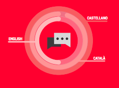

Formación académica
2013
Fabricación Digital
Escola Massana. Barcelona
2009 | 2011
Digital Film & Animation
SAE Institute.
[Beca
Tu futuro Digital 2009] Barcelona
2005 | 2009
Graduada en Arte Electrónico y Diseño Digital
Escola Superior de Disseny.
[ESDi | Ramon Llull] Sabadell.
Idiomas
Habilidades personales
emprendedora | dinámica responsable | resolutiva creativa | organizada | atención al detalle | trabajo en equipo
Intereses
dibujar | escribir | leer caligrafía | fabricación digital | viajar | música electrónica | cine, animación y videoclips
Experiencia audiovisual
-
Audiovisuales en directo (vj)
En diversos clubs, galerías y festivales desde 2006.
Sónar: Festival Internacional de Música Avanzada y New Media Art de Barcelona. MiRA Music & Visuals Art Festival. Barcelona. | Razzmatazz Club | Plug Festival | InterAct Festival Nunart: Barcelona creacions contemporàneas. | Montagood Festival | TrivialXperience Festival | Hazard Festival | H2Zone Festival | Sala KGB | Sala Campus | Club Zoreks | Sala Begood | Estraperlo Club | Miscelanea | Sala Mephisto | Habitat Techno Club | Inferno | Overlook | Rauchhaus - Berlín | K9 - Berlín | Niu: espai artístic contemporani. | La Bombeta | Sala Nou Símbol | La Báscula | Etc
-
Departamento de arte [construcción escenográfica, atrezzo, postproducción, varios]
Séptimo Marte [estudio artístico / audiovisual] Catalunya | Desde 2014.
Trabajos para: Cubick Room Escape, Bird Aprons, Directe.cat, Savage.tv, Tristan Mur, U.P.C., Returning Short Film (director Edu Fermín), De otro lado (director Bruno Marín), etc
-
Diseño y programación del sistema audiovisual y control room.
Cubick Room Escape Mataró. [Sala recreativa] Mataró | Octubre 2015
-
Motion graphics | Title Design | Composición | Postproducción
Ningú no pot somiar per tu [largometraje cinematográfico], Audiotek [soluciones auditivas], Electronic Boost Records [sello discográfico], Corall [programa televisivo. Coproducción de Laneta con la Xarxa de Televisions Locals de Catalunya], Olmo Sobrino [Cinematógrafo], etc
-
Cámara | Realización
GastroFira [servicios gastronómicos], Corall [programa televisivo. Coproducción de Laneta con la Xarxa de Televisions Locals de Catalunya], Returning Short Film [corto de Edu Fermín, como foto fija], Lacrina por Dulce Estrada [marca de moda].
-
Edición | Montaje
GastroFira [servicios gastronómicos], La Ruta 66 [programa televisivo. Producción de Pirámide TV, coproducción de Antena 3 Televisión], APC System [industria].
Experiencia en diseño online/offline
- Diseño editorial | Diseño gráfico | Ilustración Returning Short Film [cortometraje cinematográfico], Electronic Boost Records [sello discográfico], Blauwald [sello discográfico], EatBeats [eventos musicales], Madhouse Recordings [sello discográfico y promotora de fiestas], Rizomatik [colectivo musical y promotora de fiestas], Melting Pot Records [sello discográfico].
- Diseño web Returning Short Film [cortometraje cinematográfico], Arte, arquitectura y sociedad digital [Grupo de Investigación del Departamento de Arte de la Universidad de Barcelona], ViaBcn [gabinete psicológico y psiquiátrico].
Habilidades técnicas
OTROS SOFTWARE
VDMX | Modul 8 | MadMapper | Resolume | Ableton Live | Quartz Composer | Vuo | Plataforma Wordpress.
ENTORNOS Y LENGUAJES DE PROGRAMACIÓN
HTML | CSS ◉◉◐○○
Max MSP/Jitter | PHP◉◉○○○
Processing | Arduino | Grasshopper | Touchdesigner | OpenGL◉○○○○